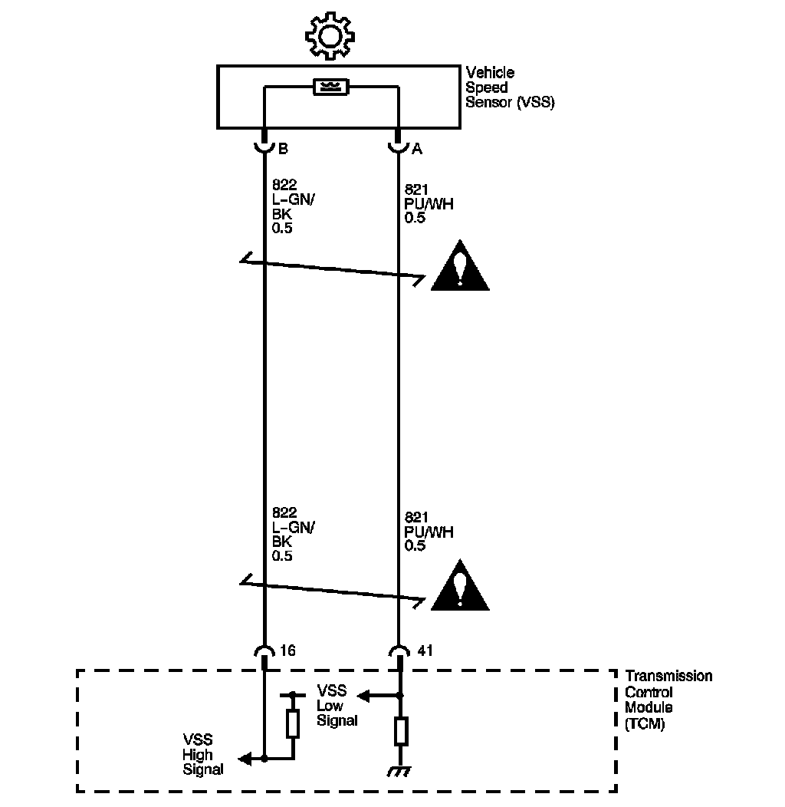

4L60-E / 4L65-E / 4L70-E Automatic Transmission
DTC P0723

Circuit Description
The vehicle speed sensor (VSS), also called the output shaft speed sensor (OSS) provides vehicle speed information to the transmission control module (TCM). The VSS is a permanent magnet generator. The sensor is mounted in the transmission case facing the rear internal gear which is splined to the output shaft assembly. As the output shaft and internal gear rotate, the toothed rotor of the internal gear produces AC voltage as the rotor teeth pass through the magnetic field of the sensor. The AC voltage level and the number of pulses increase as the speed of the vehicle increases. The TCM converts the voltage to vehicle speed. The TCM uses the output shaft speed signal to determine shift timing and torque converter clutch (TCC) scheduling.
If the TCM detects an unrealistic drop in output shaft speed, DTC P0723 sets. DTC P0723 is a type B DTC.
DTC Descriptor
This diagnostic procedure supports the following DTC:
DTC P0723 Output Speed Sensor Circuit Intermittent
Conditions for Running the DTC
^ No ISS DTCs P0716, P0717.
^ No SS DTC P0974.
^ Ignition voltage between 8-18 volts.
^ Transmission is not in PARK.
^ The engine run time is greater than 6 seconds.
Conditions for Setting the DTC
The transmission output shaft speed drops 1,200 RPM or greater, for at least 3.25 seconds.
Action Taken When the DTC Sets
^ The TCM illuminates the malfunction indicator lamp (MIL) during the second consecutive trip in which the Conditions for Setting the DTC are met.
^ The TCM commands maximum line pressure.
^ The TCM freezes transmission adaptive functions.
^ The TCM calculates vehicle speed from the automatic transmission input shaft speed sensor and commanded gear.
^ At the time of the first failure, the TCM records the operating conditions when the Conditions for Setting the DTC are met. The TCM stores this information as a Failure Record.
^ At the time of the second failure, the ECM records the operating conditions when the Conditions for Setting the DTC are met. The ECM stores this information as a Freeze Frame.
^ The TCM stores DTC P0723 in TCM history.
Conditions for Clearing the MIL/DTC
^ The ECM turns OFF the MIL after the third consecutive drive trip in which the TCM does not send a MIL illumination request.
^ A scan tool can clear the MIL/DTC.
^ The TCM clears the DTC from TCM history if the vehicle completes 40 warm-up cycles without an emission related diagnostic fault occurring.
^ The TCM cancels the default actions when the ignition is OFF long enough in order to power down the TCM.
Diagnostic Aids
^ Inspect the rear internal gear teeth for damage.
^ Visually inspect the VSS for cracks or damage.
^ Ensure the VSS is properly torqued to the transmission housing.
Test Description
The numbers below refer to the step numbers on the diagnostic table.
2. Disable the traction control system when performing this step. When the ignition switch is cycled OFF and then back ON, the traction control system defaults to ON.
3. This step tests the VSS.
5. This step tests the integrity of the VSS.